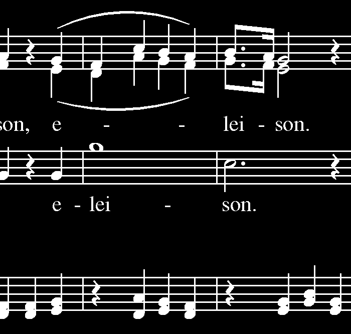
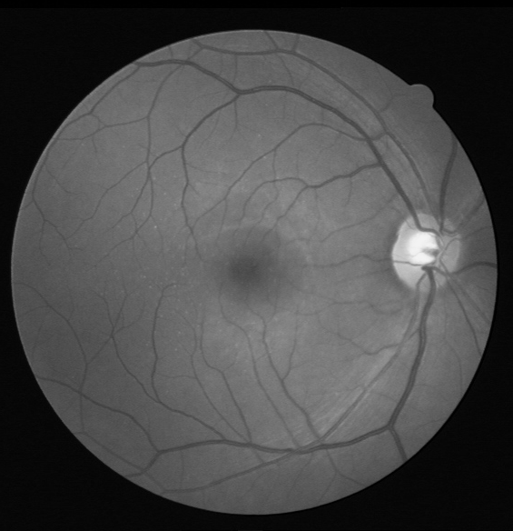

I have received my Bachelors and PhD in Computer Science from the University of São Paulo at the Institute of Mathematics and Statistics under the supervision of profs. Roberto Hirata Jr and Nina Hirata. I also did an internship at the Institut National des Sciences Appliquées in Rouen under the supervision of professor Stéphane Canu in the LITIS lab.
Currently I am an Assistant Professor at Insper's Computer Engineering course.
Teaching
I teach courses belonging to the Systems Development core. Some of the materials are available online, but most are in Portuguese only.
- Desenvolvimento Aberto (Open Source Development) - 2018/2
- SuperComputação (High Performance Computing) - 2018/2
- Sistemas Hardware-Software (Computer Systems) - 2017/2, 2018/1
Research Projects
My research efforts are focused, at the moment, in Computer Science Education and Accessibility. I am still transitioning from my previous research project (shown below) and do not have strong results yet. We did present the preliminary works below, but they are not yet at the level I want to achieve.
- MONTAGNER, IGOR S.; MIRANDA, F. R. ; HASHIMOTO, M. . Customizing rubrics to enable open-themed projects in Robotics and AI. In: PAEE/ALE, 2018, Brasília. International Symposium on Project Approaches in Engineering Education, 2018. v. 8.
- MONTAGNER, IGOR S.; HASHIMOTO, M.; MIRANDA, F. R. . Avaliação entre pares. Rubricas. Educação em Engenharia. In: COBENGE, Congresso Brasileiro de Educação em Engenharia, 2018.
More will certainly come in 2019!
Thesis research
W-operator learning investigates the use of Machine Learning techniques to estimate local image transformations. Each pixel is processed using only a small window around it. More details about the techniques studied in this area can be found at our tutorial "Image operator learning and Applications". My thesis is available at USP virtual library. Code and other resources about this work are available at TRIOSlib.
 We have aplied the developed techniques to Staff removal, a commmon preprocessing used in Optical Music Recognitions. Typically, algorithms designed speficifically for this task exploit some inherent characteristics of musical documents, such as the presence of large horizontal lines (the staffs) or the expected height of objects. Unfortunately, these assumptions are often violated and existing methods fail. We have obtained state-of-the-art results with methods that extract all information from a set of segmented training images and show that the result is robust to deformations in the images.
 We also worked with the segmentation of blood vessels in the retine using the DRIVE dataset. We have developed an approach based on Support Vector Machines and Kernel Approximations that can be applied to both binary and gray-level inputs and tested it for this task. Although our results were state-of-the-art, we have obtained better results than many algorithms developed specifically to solve this problem.
Preliminary results were presented in this paper and more up to date results are shown in my thesis.
The complete list of my publications can be found at Google Scholar. Supplementary material for my publications is hosted at my university website. My CV is available at the Lattes Platform.